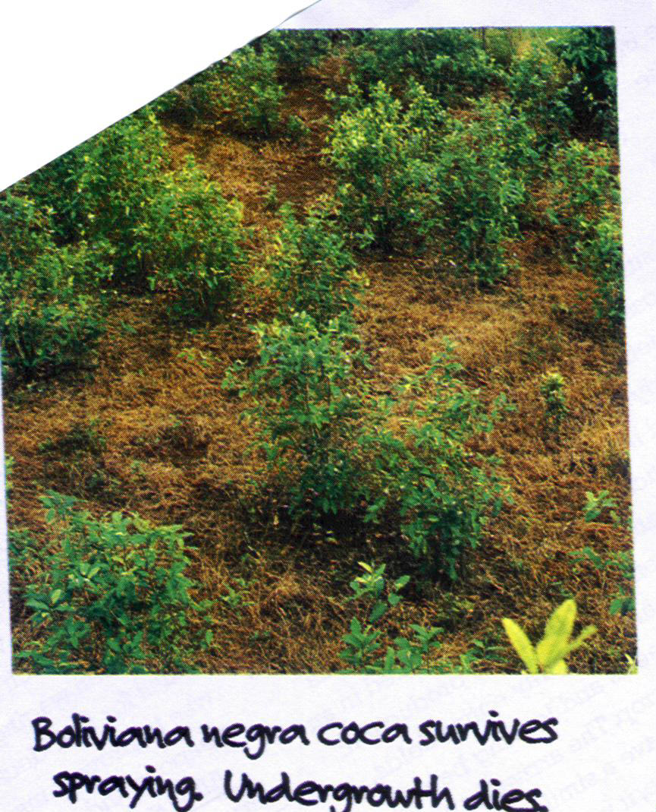

Artificial Selection or
Genetic Engineering?

Your tax dollars at work?
Roundup Ready coca plants may have evolved resistance to
the U.S. drug
interdiction efforts in Columbia. After several years of spraying Roundup,
this
variety appears to be resistant to the spray.
We appear now to be helping coca farmers by killing all
the weeds
for them!
From the standpoint of natural selection
theory,
there are
two possibilities for how this happened.
(1) Natural variation allowed a few plants to be resistant,
farmers
noticed and distributed cuttings post-haste. As
United States
spraying efforts
destroyed all the other varieties, after a few years fields were
full
of Boliviana
Negra. (2) Drug cartels used their
considerable financial resources to hire a rogue geneticist to
insert
the same
gene used for the approved and financially successful Roundup
Ready soy
bean
plant.
Either method demonstrates an
application of the basic
principles of natural selection.
For the
complete story, see the Wired Magazine
article, “The
Mystery
of the Coca Plant that Wouldn’t Die.”